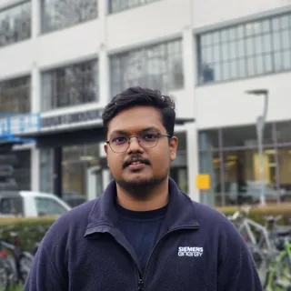

Thermal engineering
How do geometry, surface condition and thermal resistance affect high-temperature heat transfer? I’m interested in transient CHT and carefully bounded experimental–numerical comparison.
Thermal methods & evidence →
Abhijith SivaprasadanM.Sc. candidate at KTH · Stockholm, Sweden
I’m Abhijith Sivaprasadan, an M.Sc. Sustainable Energy Engineering candidate at KTH. My work connects thermal-fluid simulation, experimental methods and energy-system modelling.
Interested in PhD and research opportunities in high-temperature heat transfer, experimental–numerical methods and energy systems.
One portfolio / Five perspectives
A focused starting point for each kind of opportunity. Every track has its own shareable page with relevant work, experience, skills and education.
01 / Research interests
How do geometry, surface condition and thermal resistance affect high-temperature heat transfer? I’m interested in transient CHT and carefully bounded experimental–numerical comparison.
Thermal methods & evidence →How do demand, network limits and storage change system decisions? My work explores heat and power dispatch, grid flexibility, hydrogen and electricity investment.
Energy systems work →How can operational data support defensible energy decisions? My focus includes energy-performance indicators, load drivers, metering gaps and transparent emissions calculations.
Industrial methodology →02 / Selected work
Open methods, inspectable code, and explicit limits. The case studies distinguish numerical verification, coursework and exploratory modelling from real-system validation.
Local electricity-investment GUI and shared Pyomo/HiGHS planner, with guarded historical-data tooling and resumable monthly ERA5 acquisition. Synthetic and uncalibrated; empirical stages remain pending.
Python · Pyomo · HiGHS · Streamlit · NumPy · pytest
How do corridor limits and flexibility change dispatch? A Netherlands-inspired screening model with hand-checkable congestion and storage tests. Synthetic topology; not a validated Dutch grid.
PyPSA · Linopy · HiGHS · Streamlit · Python
How do cost and emissions objectives change hydrogen dispatch? An hourly wind–electrolyser model with known-optimum tests and an explicit synthetic 168-hour reference. No annual-run claim.
Pyomo · HiGHS · Python · Hydrogen
How does energy use change with production? Baseline normalisation and residual diagnostics checked against known-linear data, with explicit missing-meter handling. Alerts are not root-cause diagnoses.
Python · Streamlit · Excel · PDF reporting
How do fuel activity and allowance-price assumptions affect exposure? Tested Scope 1 calculations with contextual Scope 2 reporting and transparent demonstration factors. Not compliance advice.
Streamlit · Excel · Python · EU ETS
How do degradation and thermal transients affect a gas turbine? A Make-built educational simulator checked against hand calculations, an analytical transient and repeatable sensor-noise tests. Not commercial-engine validation.
Fortran 2008 · Python · Win32/GDI+
Also: Siemens thesis · Structural FEA · Non-gray radiation modelling · Explore ThermoTwin-F →
03 / Expertise & evidence
Each area brings together related projects, professional experience, education, coursework and supporting material. No self-ratings—just the documented work.
04 / Experience
Test Engineer - Master Thesis Student
CFD/CHT modelling, measurement-chain commissioning and structured failure analysis in the Fluid Dynamic Lab.
Role details →Energy Efficiency Intern
Desk-based industrial energy-performance methodology, EnPI design and metering-readiness assessment; no plant-savings claim.
Role details →Student Intern (Pyrolysis)
Reactor-concept literature review and cost-analysis drivers for polymer-waste pyrolysis.
Role details →Engineer | Backend Developer | TypeScript | NestJS
TypeScript/NestJS backend APIs, endpoint tests, reliability fixes and Postman automation.
Role details →05 / Education
KTH Royal Institute of Technology
Master’s programme in heat and power, energy systems and numerical methods. Thesis completed; 115 hp recorded in the May 2026 transcript.
Education & coursework →Aalto University / Unite! Virtual Exchange
Credited exchange elective covering lifecycle and circular-economy perspectives on energy storage; not a separate degree.
Education & coursework →College of Engineering Perumon / APJ Abdul Kalam Technological University
Mechanical engineering foundation with coursework, design competitions and the final-year interactive robot project.
Education & coursework →Publications & written work
Published KTH thesis and undergraduate robot publications, alongside reproducible reports and source-linked case studies.
Research & communication dossier →06 / Contact
I welcome conversations about doctoral research, thermal engineering and energy-system modelling in Sweden and the EU.
abhijithsivaprasadan@gmail.com